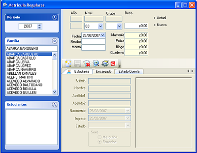
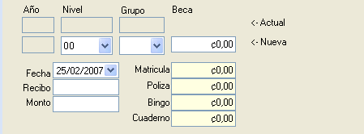
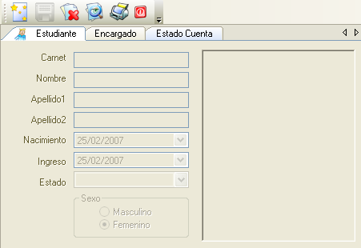

Esta pantalla se encuentra divida en tres grandes secciones que tiene funcione integradas para el proceso de matricula, en la barra azul de la izquierda se encuentra el localizador de familias , en la seccion superior derecha se encuentra el area de matricula y en la inferior los datos del estudiante.

Esta seccion permite seleccionar el periodo en el cual se va a matricular el estudiante, ademas de la familia que se desea matricular , este se puede realizar de dos maneras ,
Una vez localizada la familia en la seccion de estudiante aparecerán los estudiante correspondiente a la famila seleccionada , en esta lista al seleccionar uno de los estudiante , inmediantamente aparecera la información del estudiante que se registro en la seccion de estudiantes y podra registrar la información de la matricula ,
Si el estudiante anteriormente se habia martriculado en el periodo seleccionado, se le indicará esta condición, además de solicitar si desea cambiar la información de la matricula anteriormente registrada. y se procedera a la sección de matricula
En esta area de la pantalla se visualizará la informacion de la ultima matricula realizada como el año , nivel y grupo y beca de la ultima matricula , ademas y el estudiante se encuentra moroso el fondo de esta area cambiara a color rojo para indicar su estado, indiferentemente de su estado en se prodra matricular al estudiante y registrar la información en los campos: nivel, grupo y beca asignada, adicionalmente la fecha , número de recibo de matricula y monto por el cual se realiza la matricula , con este último campo monto se realiza una distribución automática entre los rubros , matricula, poliza, bingo y cuaderno de comunicación

En esta area se muestra la información completa del estudiante , y entre otros hay que toma en consideración a la hora de matricular su estado como estudiante y estado de cuenta para poder realizar la matricula en la pestaña de estado de cuenta si el estudiante se encuentra en condición morosa la pestaña cambiara a color rojo para indicar esta situación.
